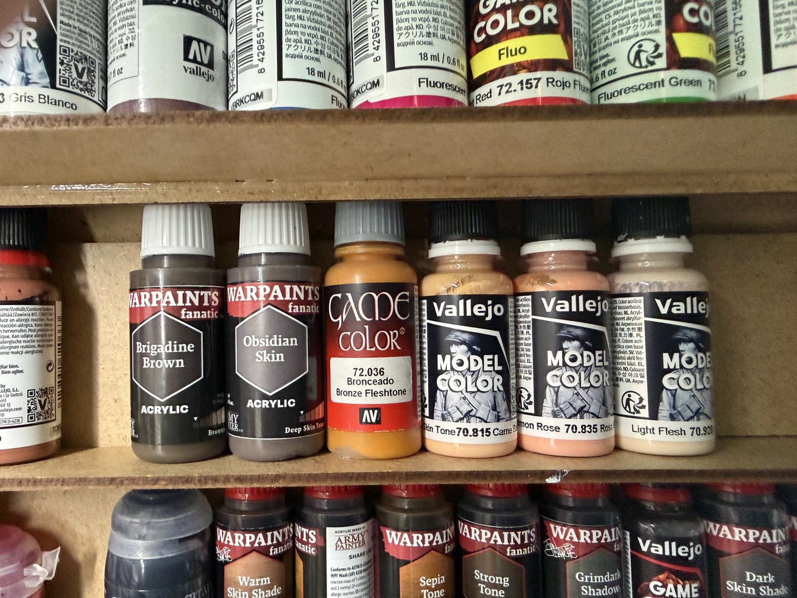
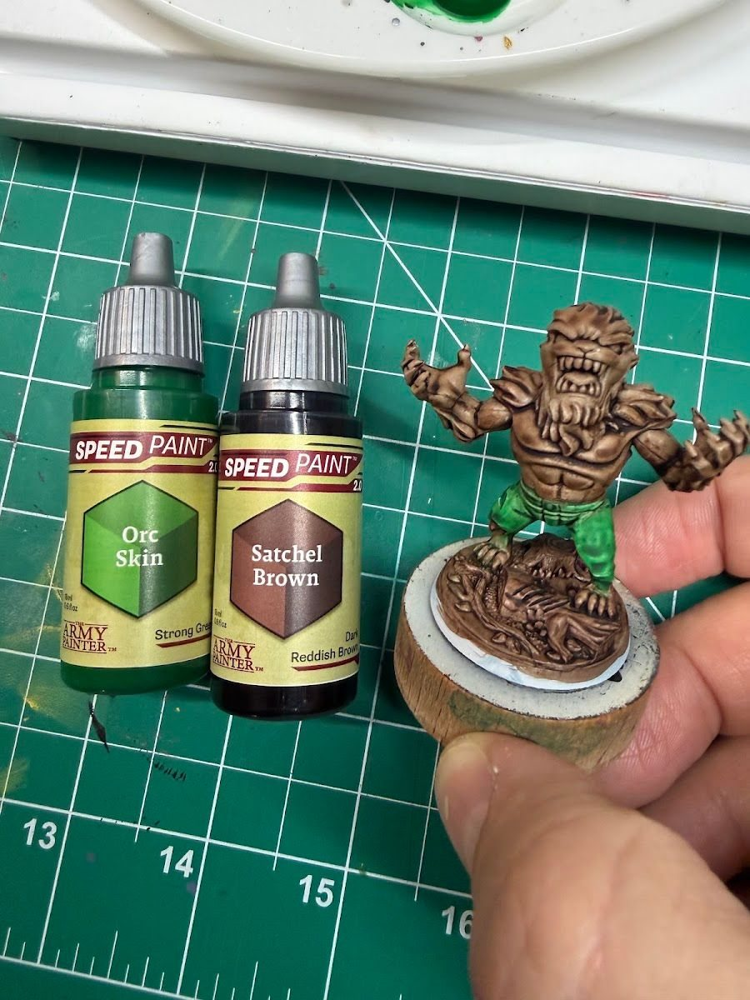

A starter set covers the basics: primaries, black, white, a metallic or two, a wash. The trouble starts a few minis later, when you catch yourself mixing the same skin tone for the fifth time, or realize you have no way to make anything actually glow.
Why this matters
Paint racks fill up fast with colors that looked great in the store and never get used. The paints that earn their spot are the boring ones that remove a step you repeat all the time, plus a few that unlock an effect you can't mix.
The short version
Buy the colors that remove friction from things you paint often, not colors that merely look interesting on a rack. In practice that usually means, in this order:
- Charcoal and off-white instead of pure black and pure white
- Premixed skin tones
- Saturated purples, pinks and magentas
- The colors you keep remixing
- Neons or fluorescents for glow effects
- A deep black red or oxblood
Counted by bottle, that's roughly ten (two neutrals, a few skin tones, a couple of purples and pinks, and so on). Fill the slots in as you need them.
Why each one earns its spot
Charcoal and off-white. Pure black and pure white are harsh. A charcoal or very dark grey lets you still highlight "black" things, and an off-white or bone gives you a top highlight that doesn't look chalky. You'll use both on almost every mini.
Premixed skin tones. Mixing skin every session means it never quite matches the last time. A light, mid and deep premixed skin tone (and a shade for each) makes faces faster and more consistent across a squad. Ms. Marvel was the mini where I practiced deeper skin tones, and having the right bottles ready made that far easier than mixing on the fly.
These are the ones I actually reach for:
- Light to mid: Vallejo Model Color Light Flesh (70.928), Basic Skin Tone (70.815) and Salmon Rose (70.835)
- Warm tan: Vallejo Game Color Bronze Fleshtone (72.036)
- Deeper tones: Army Painter Warpaints Fanatic Brigadine Brown and Obsidian Skin
- Shades to go with them: Warpaints Fanatic Warm Skin Shade and Dark Skin Shade, plus Sepia Tone and Strong Tone washes

Saturated purples, pinks and magentas. These are hard to mix bright. Mixing red and blue tends to give you something muddy. If you paint superheroes, villains or anything magical, a clean purple and a hot pink are worth buying.
The colors you keep remixing. Everyone has one. For superhero minis, a good dark blue (think classic X-Men) is a common example. If you've mixed it three times, buy it.
Neons and fluorescents. Glow effects need saturation you can't get from regular paint. On Vulture I layered fluorescent green over a white base to get an eerie glow. See beginner OSL for how to use them without everything turning into a highlighter.
Black red or oxblood. Inside of mouths, brick, leather, dried blood, dark capes. It shows up everywhere once you have it.
What about specialty paints?
Speed paints and contrast-style paints are a different kind of buy: they're a technique, not just a color. My first try with Army Painter Speedpaints was as a base layer on Werewolf by Night, and the fur and muscle definition looked great before I'd added any highlights. Worth trying once you're comfortable with basics.
Specialty metallics are similar. I tried Turbo Dork's color-shifting metallics on Mysterio's helmet. Trickier to work with than regular metallics, but the effect fit the character.

Tradeoffs
- Sets vs. singles. Big sets are good value if you'll use most of the colors. If you already have a starter set, singles are usually smarter.
- Brands. Mixing brands is fine. Every paint I've named here could be swapped for a close match from another line.
- Budget. Buy one slot at a time, when a mini actually needs it.
Checklist
- Look at your last five minis: what did you mix more than once?
- Do you have a charcoal and an off-white?
- Can you paint a face without mixing?
- Is there anything you've wanted to make glow?
- Buy one slot, paint with it, then decide on the next
Next: put the new colors to work by planning your palette before the next mini.